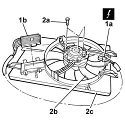

5040A41 Air conditioning condenser FAN - R.R.
- Path
- Procedures > 50 auxiliary units > 5040 AIR CONDITIONING CASING AND COMPONENTS > 5040A AIR CONDITIONING COOLING CIRCUIT > 5040A41 Air conditioning condenser FAN - R.R.
- Kind
- repair procedure (removal / refitting; the operation number is the code)
- Applies to
- all engines; all production periods
- Interactive page
- https://sloeber94.github.io/elrnDB-lThss/en/#/79164
Applies to: all engines; all production periods
 Removing
Removing
 Refitting
RefittingSee in Op. 7040D50 ENGINE COMPARTMENT UPPER SOUND INSULATION SHIELD - R.R.
Applies to: engines: 2.0 TB, 2.4 20V, 3.0 V6; all production periods
See in Op. 7055B54 PROTECTION/GUARD under engine - R.R.
See in Op. 1048A28 vacuum air circuit resonator pipe - r+r
Applies to: engines: 2.4 JTD 10V; all production periods
See in Op. 7055B54 PROTECTION/GUARD under engine - R.R.
Applies to: engines: 2.4 JTD 20V; all production periods
See in Op. 7055B54 PROTECTION/GUARD under engine - R.R.
See in Op. 1016A10 SOUND-PROOFING COVER - R.R.
See in Op. 1048B44 RIGID air supply PIPE from heat exchanger to intake manifold - R.R.
See in Op. 1048A56 UPPER RESONATOR - R.R.
See in Op. 1048A50 air inlet pipe to turbocharger - r + r
See in Op. 1048A21 AIR INLET HOSE FROM INTAKE TO FILTER - R.R.
Applies to: all engines; all production periods
1. If the assembly has to be dismantled at the bench, disconnect the electrical connector from the fan motor (1a), release the electrical wiring from the retaining springs and remove the fan management control unit (1b).
2. Undo the bolts (2a) fixing the fan (2b) and separate it from the duct (2c).

Applies to: all engines; all production periods
Refitting
Removing- Fit the fan on the duct.
- Secure the wiring to the retaining springs and connect the connector to the fan motor.
Applies to: engines: 2.4 JTD 20V; all production periods
See in Op. 1088E10 Radiator cooling FAN - R.R.
See in Op. 1048A10 COMPLETE AIR FILTER -R.R.
See in Op. 1048A21 AIR INLET HOSE FROM INTAKE TO FILTER - R.R.
See in Op. 1048A50 air inlet pipe to turbocharger - r + r
See in Op. 1048A56 UPPER RESONATOR - R.R.
See in Op. 1048B44 RIGID air supply PIPE from heat exchanger to intake manifold - R.R.
See in Op. 1016A10 SOUND-PROOFING COVER - R.R.
See in Op. 7055B54 PROTECTION/GUARD under engine - R.R.
- Fill the engine cooling system as described in the operation:
Applies to: engines: 2.0 TB, 2.4 20V, 3.0 V6; all production periods
See in Op. 1088E10 Radiator cooling FAN - R.R.
See in Op. 1048A10 COMPLETE AIR FILTER -R.R.
Applies to: engines: 2.4 JTD 10V; all production periods
See in Op. 1088E10 Radiator cooling FAN - R.R.
Applies to: all engines; all production periods
See in Op. 7040D50 ENGINE COMPARTMENT UPPER SOUND INSULATION SHIELD - R.R.
Topics linked from this page (11)
- 0010T20 Engine REFRIGERANT FLUID - Change
- 1016A10 SOUND-PROOFING COVER - R.R.
- 1048A56 UPPER RESONATOR - R.R.
- 1048A10 COMPLETE AIR FILTER -R.R.
- 1048A21 AIR INLET HOSE FROM INTAKE TO FILTER - R.R.
- 1048A28 vacuum air circuit resonator pipe - r+r
- 1048A50 air inlet pipe to turbocharger - r + r
- 1048B44 RIGID air supply PIPE from heat exchanger to intake manifold - R.R.
- 1088E10 Radiator cooling FAN - R.R.
- 7040D50 ENGINE COMPARTMENT UPPER SOUND INSULATION SHIELD - R.R.
- 7055B54 PROTECTION/GUARD under engine - R.R.